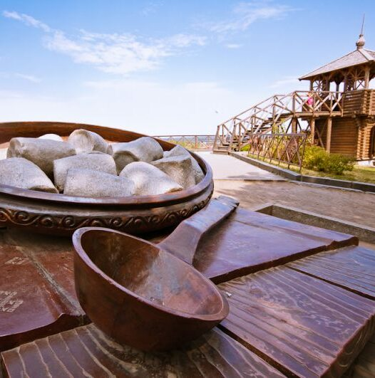
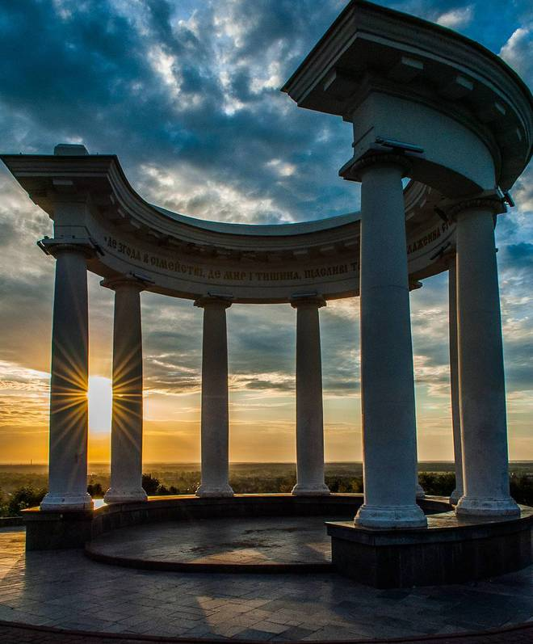
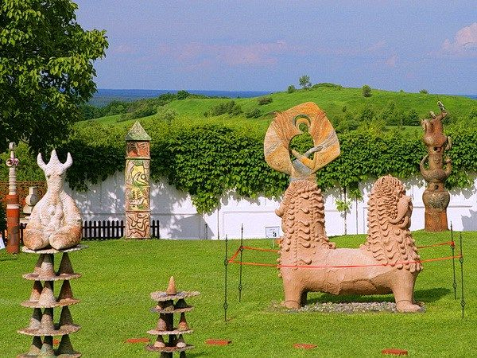
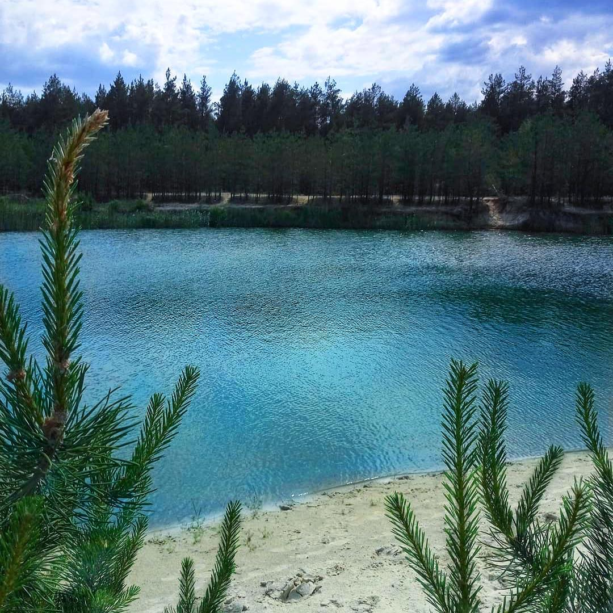
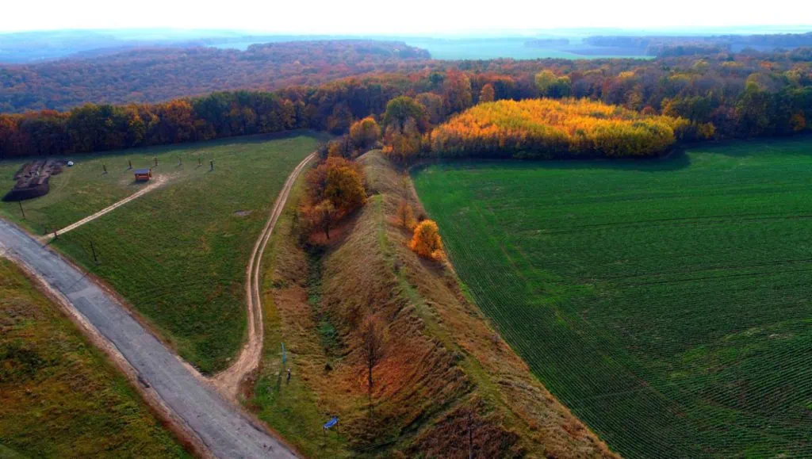
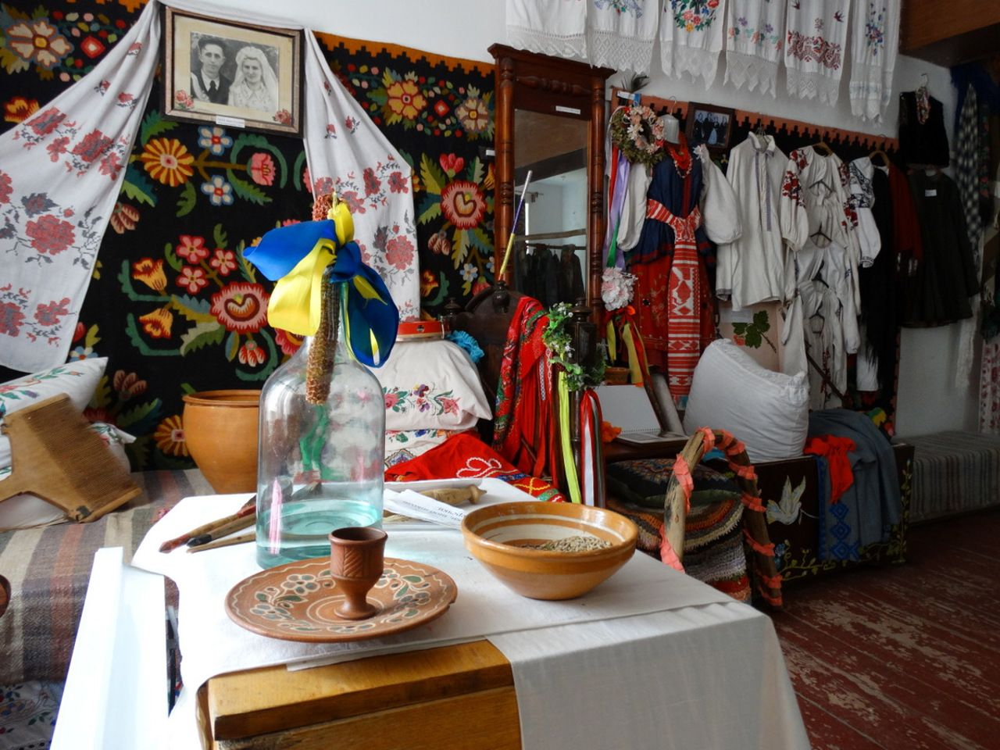
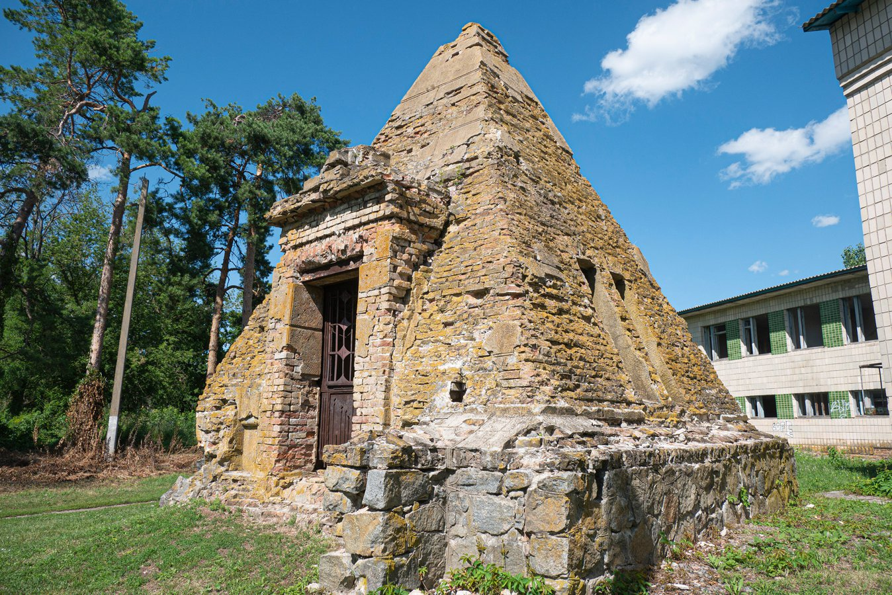
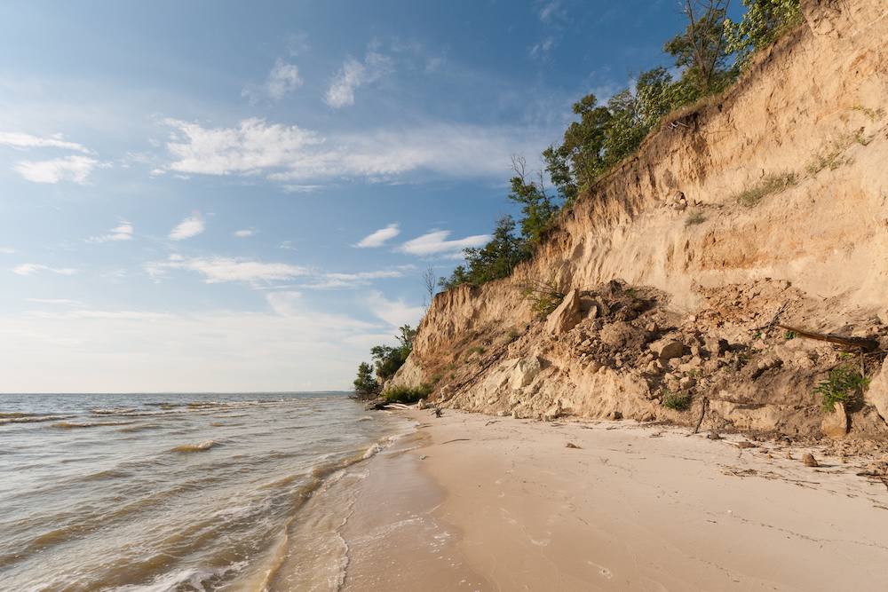
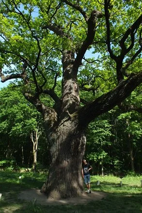

Пам'ятний знак полтавській галушці, або пам'ятник галушці — символічний пам'ятний знак на честь традиційної для Полтавщини страви української кухні — галушки, в Полтаві, один із міських символів, уособлення щедрості й добробуту.

В межах старої полтавської фортеці на місці Подільського бастіону до 200-річного ювілею Полтавської битви у 1909 році була зведена споруда, без якої нинішні полтавці не уявляють своє місто — Біла Альтанка.

У 1986 році у селі Опішня створили Музей гончарства, на базі якого сформувався науково-просвітницький та навчально-виховний комплекс, аналогів якому немає в Україні.

Уже сьомий рік поспіль село Собківка, що на Новосанжарщині є одним із найвідвідуваніших місць в області, особливо в літній період. А все тому, що поблизу нього розкинулися озера із блакитною водою, які виникли на місці піщаних кар’єрів.

Більське городище – це городище скіфського часу (кінець VIII – початок ІІІ століття до нашої ери), розташоване в межиріччі річок Ворскла, правої притоки річки Псел та Суха Грунь, біля села Більськ Котелевьского району.

Є на Полтавщині і місце, де можна зануритися у колоритність народного дійства – весілля. Музей українського весілля відкритий у 2008 році у селі Великі Будища, неподалік від Диканьки.
В експозиції музею представлене весільне оздоблення різних часів, предмети побуту, вишиті рушники та сорочки. Крім огляду музею, там пропонують також здійснити театралізований обряд українського весілля.

Дві з трьох європейських пірамід знаходяться на Полтавщині. Одна — в с. Березова Рудка Пирятинського району, друга — в с. Комендантівка Кобеляцького району. Ще одна піраміда в Європі розташована в Римі. Ці дві точно ближе до нас і не менш цікаві. Місцеві жителі вважають, що ці споруди наділені цілющою силою духовного відновлення.

Гора Пивиха — одне із найкрасивіших місць на Полтавщині. Найвища точка Лівобережної України. Висота — майже 170 метрів. Знаходиться в селищі Градизьк Глобинського району на березі Кременчуцького водосховища. Це — досить популярне туристичне місце, тому навряд чи вийде усамітнитися у вихідні. Проте відвідати гору точно варто.

Кочубеївські дуби (пам’ятка природи вікових дерев) – це велетні віком від 600-800 років, висотою 20-22м, діаметром 150-180см. У 1861 році це була дубова алея з 68 дерев, дорога якої пролягала через Миколаївський ліс і вела до Кочубеївської садиби.